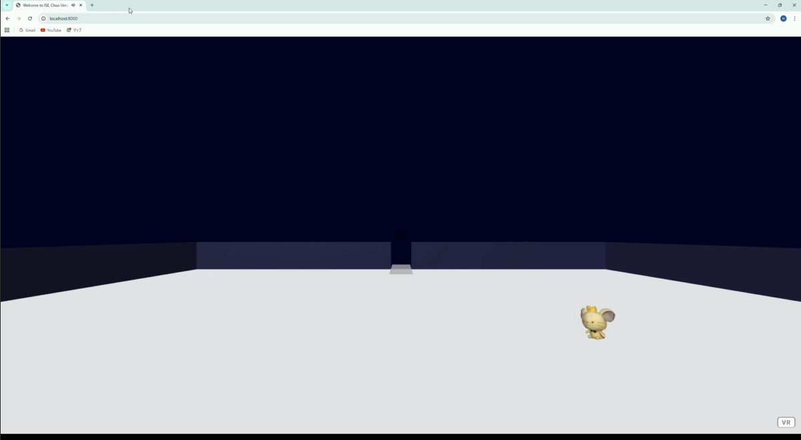

卒業研究：WebAR × 3Dモデル保護
WebAR上で3Dモデルを安全にプレビューするため、表示品質制御と段階的配信を組み合わせた手法を研究・実装しました。
※ 研究詳細については、Googleドライブの研究スライドや卒業論文、就活サイト掲載資料をご参照ください。
※ 関連内容を国際学会へ投稿中のため、公開内容を一部調整しています。
情報工学専攻 修士1年
セキュリティ系副専攻 / ネットワーク分科会
XR / Web / Security / Interactive Systems
Building systems from questions, constraints, and exploration.
情報工学を専攻する大学院M1です。XR・Web技術を中心に、3Dコンテンツ保護やインタラクティブシステムの研究開発に取り組んでいます。 私は、実際に技術を使う中で生じる違和感や制約から問いを見つけ、問題を整理しながら実装・検証へ落とし込んでいくプロセスを得意としています。 卒業研究では、「WebARで3Dモデルを配信すると、データを容易に取得できてしまうのではないか」という問題意識から出発し、 現実的に検証可能な範囲へ問題を切り出しながら、保護と体験の両立を目指した表示制御システムの実装と評価を行いました。
WebAR上で3Dモデルを安全にプレビューするため、表示品質制御と段階的配信を組み合わせた手法を研究・実装しました。
※ 研究詳細については、Googleドライブの研究スライドや卒業論文、就活サイト掲載資料をご参照ください。
※ 関連内容を国際学会へ投稿中のため、公開内容を一部調整しています。

学園祭展示向けに、短時間で直感的に楽しめるルームスケールVRコンテンツを制作しました。 「広い展示空間をどのように活用するか」「初めてVRに触れる人でも楽しめるか」という問いから出発し、 体験導線、安全性、説明負荷を意識しながら設計・実装を行いました。
個人制作 / コンセプト設計 / Unity実装
※ 写真は撮影者・体験者ともに掲載許可を取得しています
※ 使用している3Dモデルの一部はサークルメンバー制作です

Raspberry Pi、CO₂センサー、MQTTを用いて、換気支援用IoTシステムのプロトタイプを制作しました。 睡眠時の換気重要性に関する既存知見をもとに、「換気は必要だが、騒音や空調効率の問題から常時ドアを開けておくのは難しい」という課題に着目し、 必要時のみ自動で換気を行う仕組みを試作しました。 また、実際にどの程度効果があるのかが気になり、自室環境でもCO₂濃度ログを取得しました。 限られた条件での観測ではありますが、部屋の位置や環境条件によって差が出る可能性があると感じています。
チーム制作（3人）/ システム提案 / MQTT連携 / モーター制御
チーム開発形式のプロジェクト演習において、主にリーダー兼プレゼン担当としてインタラクティブコンテンツ制作を行いました。 災害発生時を想定したシナリオ型コンテンツとして、自律航行ドローンをゲームエンジン上で制御するインタラクティブシステムを制作しました。 ユーザーが瓦礫を配置して進路を妨害できるインタラクションも実装し、状況変化に対するドローン挙動を体験できる構成としました。 必要な技術領域を踏まえてチーム構成を行い、仕様整理を行い、適材適所での役割分担を行いながら、ガントチャートを用いて進捗管理を行いました。 成果発表では優秀賞を受賞しました。
チーム開発 / リーダー / プレゼン
企業とのVRコンテンツに関する共同研究では、シナリオチームの学生リーダー兼VR開発チームのメンバーとして取り組んでいます。 シナリオ制作と開発の連携面に課題を感じ、教員とも相談しながら改善提案を行いました。 その後、開発体制の整理が進み、より円滑な連携環境づくりにも貢献しました。 また、限られた工数の中で没入感を高めるための演出設計や実装アイデアについても提案を行っています。
共同研究 / 学生リーダー / VR開発 / 改善提案

「危険と言われる地域なのに、 なぜ近年は大規模水害をほとんど見ないのか？」 という疑問から、 QGISを用いて浸水履歴・治水施設・排水能力を重ね合わせ、 都市防災構造の変遷を時系列に分析しました。
Historical GIS的観点から、1981年、1991年、2013年、2014年の浸水実績と 治水施設・排水能力データを比較し、外水対策から内水対策へと 治水上の課題が変化していく過程を可視化しました。 特に1981年は、外水対策が概ね整備された一方で内水被害が残っていた時期として、 治水構造変化を比較する基準点に位置付けています。
災害が消えたのではなく、 都市化とともに管理すべきリスクの形が変化していること、 また現在の安全が、 過去の被害と治水インフラ整備の積み重ねによって成立していることを考察しました。
分析・考察例
個人制作 / 調査・分析 / レポート執筆

フィギュアスケートの滑走・回転・収束運動をテーマに、 A-FrameとJavaScriptを用いたVRアニメーション作品を制作しました。
卒業研究と並行する2〜3日間という短期間制作の中で、 「空間的な変化と見栄え」を重視して設計したWebVR作品です。
パラメトリック方程式や軌道微分による数理モデリングを用いることで、 単一の3Dモデルを再利用しながら、 「複数のスケーターが連続して演技を行う」時間的・空間的演出を構築しました。
また、VR酔い軽減のための固定壁面配置や、 カメラの消失点を意識したパース補正退場など、 没入感と鑑賞性を両立するUX設計も行いました。
BGMには自作楽曲を使用しており、 映像側の演技時間から逆算してBPMを設計することで、 音響と映像の時間構造同期を実装しています。
個人制作 / コンセプト設計 / 数理制御実装 / 音響設計

ノートPCのキーボード故障をきっかけに、 外付けキーボードを利用する環境を構築しました。 一部のキーは使用可能だったものの、 日常利用では入力に支障があり、 外付けキーボードへの移行を行いました。 しかし、机手前へ配置すると作業スペースを圧迫し、 ノートPC上へ直接配置すると、 トラックパッドや一部キーへの干渉が発生する問題がありました。
まず、キーボード梱包用の透明ケースを利用した簡易支持を試しましたが、 高さ・排熱・携帯性に課題がありました。 その後、市販製品の構造を参考にしながら、 定規と鉛筆キャップを用いた簡易プロトタイプを作成し、 支持条件やサイズ感を検証しました。
さらに、実際の製品構造を観察する機会を得たことで、 3点支持構造に着目しました。 その後は実際のキーボード形状を観察しながら、 支持距離・高さ・干渉条件を検討し、 Blenderによる支持機構設計と3Dプリント試作を行いました。
完成したパーツは、 支持構造を最小限に抑えることで、 USBメモリ程度の小型サイズへ収めることができました。 これにより、持ち運びやすく、 PC周辺機器としても邪魔になりにくい形状を実現しています。
複数のWindows系ノートPCでも試したところ、 想定より広い範囲で使用できることを確認しました。 一方で、キー間隔が極端に狭い機種や、 キーボード周辺構造が特殊な機種では使用が難しい場合もあり、 キーボード形状への依存性が存在することも分かりました。
個人制作 / 構造観察 / プロトタイピング / 3Dモデリング / 試作検証